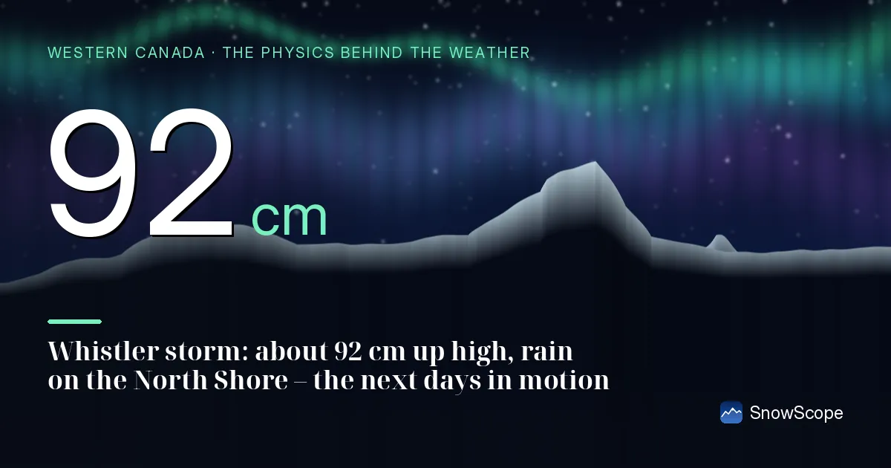
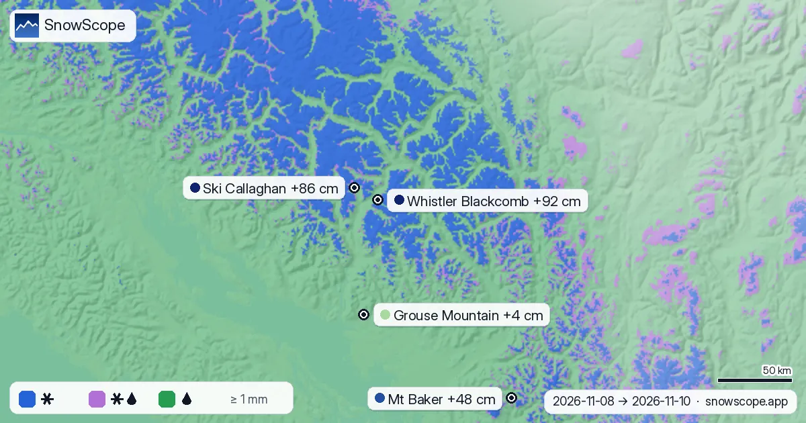

Whistler storm: about 92 cm up high, rain on the North Shore – the next days in motion
A warm, wet storm is moving into the Coast Mountains from 8 to 11 November. SnowScope shows about 92 cm of new snow on Whistler Blackcomb's high terrain, but mountains above Vancouver will see mostly rain instead: Grouse Mountain gets 72 mm of rain and only 4 cm of snow.
See the live snow forecast for Whistler Blackcomb in the SnowScope appSnow depth, powder alerts and the 3D map, free.

Height decides: the high terrain wins
The storm splits the region in two. North of Squamish the mountains are tall enough to catch snow: Whistler Blackcomb gains 92 cm, Ski Callaghan 86 cm. South of the border Mt Baker receives 48 cm. But the North Shore summits top out in the rain band: Cypress Mountain gets 68 mm of rain with only 3 cm of snow, and Mt Seymour gets 75 mm of rain with no new snow.
Sasquatch sits between these extremes at 24 cm. The difference is not distance but altitude. When the storm passes over lower terrain it still falls as rain. When it rises to the high ridges it cools enough to snow.



The 0 °C level holds steady near 2,100 m
During the wet hours the freezing level at Whistler stays close to 2,100 m. Snow will fall above this height; below it, rain will soak the slopes. This means the alpine terrain gets powder, but the lower runs and the village face a soaking instead.
The snow line—where snow actually accumulates on the ground—sits near 1,800 m at Whistler because snow melts in the warmer air and mixes with rain. At lower elevations the split is even sharper: at 1,500 m only 28 % of the precipitation falls as snow, while 46 % is rain and 26 % is wet snow that will stick to the base.
Show the numbers
| Date | Whistler Blackcomb (cm) | Ski Callaghan (cm) | Mt Baker (cm) | Sasquatch (cm) | Grouse Mountain (cm) |
|---|---|---|---|---|---|
| 8 November * | 65 | 58 | 25 | 20 | 3 |
| 9 November * | 1 | 1 | 1 | 0 | 0 |
| 10 November * | 26 | 30 | 22 | 4 | 1 |
What the layers tell us: snow at 2,000 m, rain at 1,000 m
Looking across all elevations from 500 m to 3,000 m shows how the storm behaves. Up to 1,000 m: pure rain. From 1,250 m to 1,750 m: a mixed band where snow and rain both fall, with rain still winning at the lower end. Above 2,000 m: snow takes over—70 % at 2,000 m, 85 % at 2,250 m, 99 % at 2,750 m.
A few hundred metres of elevation flip the forecast from a soaking to powder. That is why ski touring above tree line can be powder while the drive up the valley is wet.
Show the numbers
| Height (m) | Snow % | Wet snow / sleet % | Rain % |
|---|---|---|---|
| 500 | 0 | 0 | 100 |
| 750 | 0 | 0 | 100 |
| 1,000 | 0 | 7 | 93 |
| 1,250 | 3 | 30 | 67 |
| 1,500 | 28 | 26 | 46 |
| 1,750 | 50 | 23 | 27 |
| 2,000 | 70 | 17 | 13 |
| 2,250 | 85 | 10 | 5 |
| 2,500 | 94 | 5 | 1 |
| 2,750 | 99 | 1 | 0 |
| 3,000 | 100 | 0 | 0 |
Water meets mountains: why this storm is so wet
The air coming off the Pacific is both mild and saturated with water vapour. When the wind forces it to rise up the slopes it cools, the vapour condenses, and the precipitation is heavy—110 mm at Whistler alone from 8 to 12 November. At the peak of the storm on 8 November the air carries 440 kg of water per metre per second.
The mild air is the catch: even when it snows, the base is wet. The wet snow is heavier and stickier than dry powder, and it bonds more easily to the ground below. In the backcountry this matters for avalanche risk.
Wind adds to the story
Winds at altitude reach about 113 km/h during the peak of the storm. At Whistler's height these winds will scour the ridges and load the gullies and leeward slopes. Wind-slab risk is real on steep terrain.
Lower down, rain and wind together make for poor visibility and sloppy conditions on any run you can reach.
What it means for you
- High terrain above 2,000 m gets snow; lower runs get rain mixed with snow. Choose your height.
- The wet base and heavy snow mean avalanche hazard is elevated. Read the Avalanche Canada forecast before entering the backcountry.
- Forecasts change: check the live snow map again on the morning you plan to go.
- On the drive to the mountains, expect rain in the valley and snow on higher passes—roads above 1,500 m may be slippery or closed.
- Wet snow is sticky and heavy. If you hike or tour, start early and be ready to descend before afternoon softening.
About these numbers
Resort snow depths are the deepest snow on the resort's upper slopes on the date shown; they are estimates for an area, not a measurement at one point. Forecasts can change. Always read the official avalanche bulletin before going off-piste.
Cite this report
For research, teaching or the press: the numbers and charts are free to reuse under CC BY 4.0 with this citation.
SnowScope (2026), Whistler storm: about 92 cm up high, rain on the North Shore – the next days in motion, https://snowscope.app/blog/en/2026/11/whistler-storm-snow-up-high-rain-below-8-10-november-2026.html, accessed 2026-11-08
SnowScope (Atlas Labs). (2026, November 8). Whistler storm: about 92 cm up high, rain on the North Shore – the next days in motion. SnowScope snow reports. https://snowscope.app/blog/en/2026/11/whistler-storm-snow-up-high-rain-below-8-10-november-2026.html
BibTeX
@misc{snowscope2026whistlerstormsnowuphighr,
author = {{SnowScope (Atlas Labs)}},
title = {Whistler storm: about 92 cm up high, rain on the North Shore – the next days in motion},
year = {2026},
month = nov,
howpublished = {\url{https://snowscope.app/blog/en/2026/11/whistler-storm-snow-up-high-rain-below-8-10-november-2026.html}},
note = {Published 2026-11-08 14:35 UTC; accessed 2026-11-08}
}· CC BY 4.0 · Methods, data and tools →
Follow Whistler Blackcomb
Free: a message when fresh snow is coming, and the forecast every morning.
More snow reports

Banff Sunshine Village month by month: about 100 cm at mid-mountain in a usual March over 46 past winters, April deepest near the top, and a season into late May.
Whistler Blackcomb for every level, with our snow history: about 370 cm at the usual peak at mid-mountain over 46 past winters, March and April the deepest months.

Whistler Blackcomb got 75 cm of new snow at the top in a week, then a warm storm with 124 mm of water. A simple guide to base, fresh snow, rain and crust.